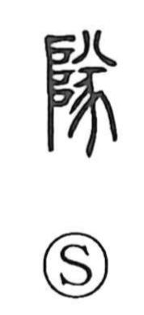

隊

Uncategorized
Kun: | On: tai, tsui
troop ・ team ・ group
Explanation
In its earliest form, 隊 shows the sacred ladder by which the gods ascend and descend (the left element, 阝), set before a sacrificial animal (豕). Together they mark the spot where the deities come down and set foot. From this image of descent, 隊 served as the ancestral graph of 墜 “to fall.” In bronze inscriptions the related graph appears in phrases meaning “not to let fall,” that is, not allowing the achievements of the ancestors to decline. Thus 隊, 墜 (and a closely related form) belong to one lineage of graphs centered on descent and alighting; later, 隊 came to be used for a “troop” or “group, company.”